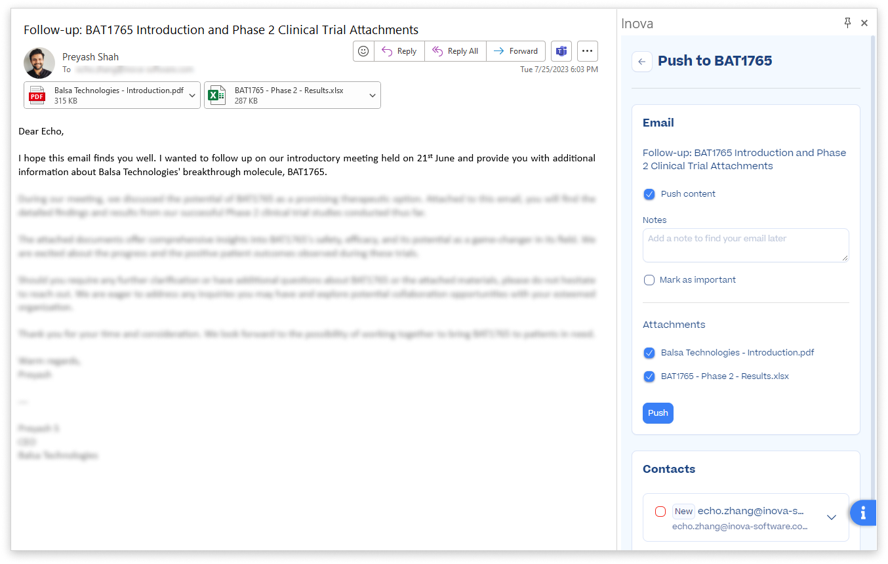

Problem Addressed
The Outlook email client is the primary means of communication and information exchange in the biopharma industry for partnering opportunities. It plays a crucial role in establishing initial contact and building relationships.
The volume of emails exchanged makes it challenging to keep track of interactions and context. The current process of managing information is not user-friendly and involves manual downloading and uploading.
Feature Overview
The Outlook addin allows users to:
- Push email contents to an existing opportunity, company or meeting
- Create a new biopharma partnering opportunity and company, and push email contents to it
- Create contacts and link them to existing or new companies and opportunities
Key Aspects
- Increased product competitiveness
- Reduced time to create opportunity by 15 seconds (11%)